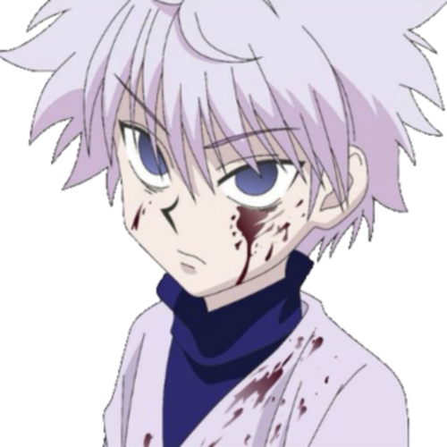

The Tremendous Life of a Child Assasin
Killua Zoldyck was born into the esteemed Zoldyck family as assasins, and ultimately chose to leave that life in order to stay with his best friend Gon. A true Gemini indeed, he can steal your heart in two ways: with his cuteness or his hand.
Killua when he doesn't get to play with Gon
Killua's Characteristics
- He can ride a skateboard (but he is NOT a scumbag)
- He makes yo-yos look scary
- Is the cutest most precious boy
Killua's Friends
Killua's best friend is without a doubt Gon, the chipper boy who helped him escape his torturous family. Click the link to learn more about Gon.